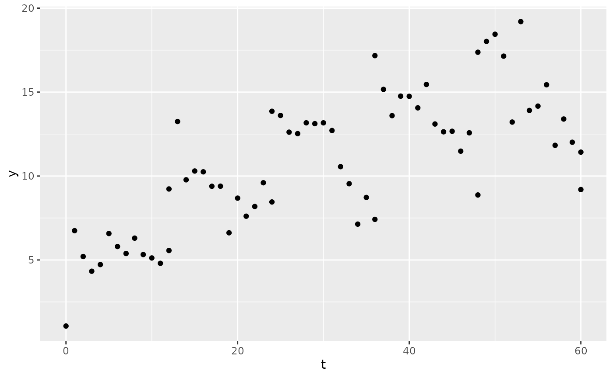
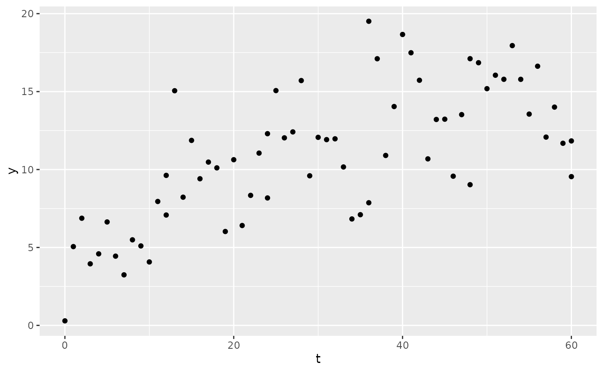

Residual error
PKPDsim can simulate residual errors in your observed data, which can
be done with the res_var argument to the sim()
function. This argument requires a list() with one or more
of the following components:
-
prop: proportional error: -
add: additive error: -
exp: exponential error:
These list elements can be combined, e.g. for a combined proportional
and additive error model one would write:
res_var = list(prop = 0.1, add = 1), which would give a 10%
proportional error plus an additive error of 1 concentration unit.
Below are some examples of the res_var argument
Combined proportional and additive:
mod <- new_ode_model("pk_1cmt_iv")
reg <- new_regimen(
amt = 1000,
n = 5,
interval = 12,
type = "bolus"
)
sim1 <- sim(
mod,
parameters = list(CL = 5, V = 150),
res_var = list(prop = 0.1, add = 1),
regimen = reg,
only_obs = TRUE
)
ggplot(sim1, aes(x = t, y = y)) +
geom_point()
Exponential:
sim2 <- sim(
mod,
parameters = list(CL = 5, V = 150),
res_var = list(exp = 0.1),
regimen = reg,
only_obs = TRUE
)Besides including the residual error at simulation time, there is
also the option to include it afterwards. For that, the function
add_ruv() is useful.
sim3 <- sim1
sim3$y <- add_ruv(
x = sim3$y,
ruv = list(
prop = 0.1,
add = 1
)
)
ggplot(sim3, aes(x = t, y = y)) +
geom_point()